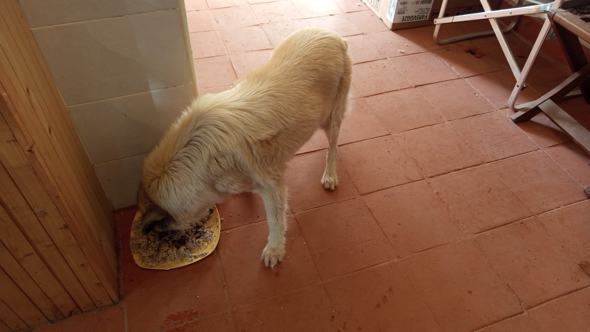

Mucheru World of Golf
Operations on Thursday, 8th October 2026 focused on critical subsurface agronomic drainage, tee platform refinement, hydraulic dam liner perimeter tucking, and material deliveries across the golf project:
Mucheru World of Golf Operations Summary
Drainage trench digging commenced on putting greens to drain excess stormwater and accommodate incoming sprinkler supply pipes, with active work on Greens 5 and 8; Teeboxes 11 and 12 were shaped and refined; Dam 2 perimeter liner edges were fully tucked into anchor trenches after removing accumulated rainwater; 1 lorry of sand was delivered; and Dams 1 and 3 continued receiving water from pipeline inlets.
- Putting Greens Drainage Trenching Commenced: Field crews commenced digging drainage trenches across putting green profiles. These trenches serve a dual purpose: efficiently removing surplus storm runoff to prevent waterlogging, and routing incoming water supply lines for course sprinkler irrigation. Excavation was actively carried out on Green 5 and Green 8, trenching through sub-base profiles to specified gradients.
- Teebox 11 Platform Shaping & Refinement: Construction laborers actively shaped, graded, and refined the playing platform on Teebox 11. Embankment edges and playing surfaces were leveled to uniform architectural contours using hand tools.
- Teebox 12 Platform Shaping & Refinement: Laborers continued grading and shaping the Teebox 12 launch platform. Embankments and approach surfaces were smoothed and brought to finished design levels.
- Dam 2 Perimeter Liner Tucked in Anchor Trench: Field crews finished tucking the heavy-duty polythene liner edges into the perimeter anchor trench around the top rim of Dam 2. Accumulated rainwater from yesterday morning was completely removed. The liner had been placed above the water yesterday as a preventive measure against further rainfall. Polythene seam welding is scheduled for completion next.
- Sand Delivery & Logistics: 1 lorry of coarse sand was delivered on site to support ongoing green construction and drainage bedding requirements.
- Dam 1 & Dam 3 Water Inflow: Water pipe inlets feeding Dam 1 and Dam 3 continued active discharge, maintaining steady replenishment of stored irrigation reserves.
Field video documentation capturing Thursday's operations at Mucheru World of Golf: commencement of drainage trench excavation across Greens 5 and 8 for excess stormwater removal and sprinkler supply, platform shaping and refinement on Teeboxes 11 and 12, perimeter liner tucking along Dam 2 anchor trenches, and continuous water inflows into Dam 1 and Dam 3 reservoirs.
18-hole putting green status audit showing the latest work completed and current condition for each green as of October 8, 2026:
| Green | Current Technical & Agronomic State | Milestone Status |
|---|---|---|
| Green 1 | Surplus red soil (from 1 truck delivery) applied and leveled around collar and surrounds (Oct 2). | Surplus Red Soil Applied |
| Green 2 | Surplus red soil (from 1 truck delivery) applied and leveled around collar and surrounds (Oct 2). | Surplus Red Soil Applied |
| Green 3 | Surplus red soil (from 1 truck delivery) applied and leveled around collar and surrounds (Oct 2). | Surplus Red Soil Applied |
| Green 4 | Outlet drainage trench excavated across fairway corridor to safely discharge runoff (Oct 5). | Outlet Drainage Dug |
| Green 5 Today | Drainage trenches actively excavated across green sub-base for excess storm runoff and sprinkler water supply lines (Oct 8). | Drainage Trenches Dug |
| Green 6 | Surplus red soil applied to raise and level surrounds (Sep 28). | Apron Raised • Palms Placed |
| Green 7 | Shape designed and contoured with pumice bed per Joe Kamau's layout; sand delivered (Oct 4). | Shape Designed • Pumice Leveled |
| Green 8 Today | Drainage trenches dug across subgrade profile for draining excess water and bringing in sprinkler supply (Oct 8). | Drainage Trenches Dug |
| Green 9 | Surplus red soil (from 1 truck delivery) applied and leveled around collar and surrounds (Oct 2). | Surplus Red Soil Applied |
| Green 10 | Surplus red soil (from 1 truck delivery) applied and leveled around collar and surrounds (Oct 2). | Surplus Red Soil Applied |
| Green 11 | Riversand application in progress over pumice bed; partial coverage completed (Oct 3). | Riversand in Progress |
| Green 12 | Surplus red soil (from 1 truck delivery) applied and leveled around collar and surrounds (Oct 2). | Surplus Red Soil Applied |
| Green 13 | Surplus red soil spread around surrounds to raise and match green level (Sep 29). | Surplus Red Soil Applied |
| Green 14 | Surplus red soil spread around surrounds to build up perimeter level (Sep 29). | Surplus Red Soil Applied |
| Green 15 | Riversand applied over pumice bed across most part of green (Oct 3). | Riversand Applied (Most Part) |
| Green 16 | Surplus red soil spread around surrounds to blend with fairway (Sep 29). | Surplus Red Soil Applied |
| Green 17 | Surplus red soil spread around surrounds to raise and align levels (Sep 29). | Surplus Red Soil Applied |
| Green 18 | Surplus red soil spread and leveled around collar and surrounds (Sep 30). | Surplus Red Soil Applied |
Comprehensive 18-hole championship teebox platform audit tracking earthwork leveling, structural embankments, and playing corridor alignments as of October 8, 2026:
| Teebox | Current Technical & Earthwork State | Platform Status |
|---|---|---|
| Tee 1 | Championship launch platform completely reshaped, cut, and graded to design elevation using Backhoe Loader (Sep 24); received 1 lorry red soil delivery (Sep 26). | Platform Reshaped |
| Tee 2 | Playing launch platform completely reshaped, contoured, and graded using Backhoe Loader (Sep 24); received 1 lorry red soil delivery (Sep 26). | Platform Reshaped |
| Tee 3 | Playing launch platform completely reshaped, contoured, and graded using Backhoe Loader (Sep 24); received 1 lorry red soil delivery (Sep 26). | Platform Reshaped |
| Tee 4 | Championship launch platform completely reshaped, cut, and graded using Backhoe Loader (Sep 23); received 1 lorry red soil delivery (Sep 26). | Platform Reshaped |
| Tee 5 | Main perimeter drainage pipeline backfilled all the way past Maina's place (Oct 2). | Drainage Backfilled |
| Tee 6 | Precision leveling and compaction completed; fresh delivery of 1 lorry red loam topsoil unloaded at platform surrounds (Sep 26). | Red Soil In • Leveled |
| Tee 7 | Both number 7 teebox platforms actively reshaped, cut, and leveled by crew under Joe Kamau and supervisors (Oct 4). | Both Platforms Reshaped |
| Tee 8 | Graded, leveled, and contour-adjusted; fresh delivery of 1 lorry red loam topsoil unloaded directly on platform (Sep 26). | Red Soil In • Graded |
| Tee 9 | Playing platform leveled and surrounding perimeter ground graded (Sep 1); received 1 lorry red soil delivery (Sep 26). | Platform Leveled |
| Tee 10 | Graded and compacted platform serving the start of the back-nine playing corridor; received 1 lorry red soil delivery (Sep 26). | Platform Compacted |
| Tee 11 Today | Playing launch platform actively shaped, graded, and refined to final architectural contours and levels (Oct 8). | Shaped & Refined |
| Tee 12 Today | Both championship and forward platforms actively shaped, leveled, and refined to finished design elevation (Oct 8). | Shaped & Refined |
| Tee 13 | Playing platform earthworks completely finished, shaped, and refined to final design elevation and contours (Oct 7). | Finished & Refined |
| Tee 14 | Launch platform earthworks completely finished, shaped, and refined to final playing contour (Oct 7). | Finished & Refined |
| Tee 15 | Launch platform shaping completely finished; terrace cut to design elevation and precision leveled (Oct 6). | Platform Reshaped |
| Tee 16 | Surplus red soil moved onto platform; launch terrace completely reshaped and leveled (Oct 5). | Platform Reshaped |
| Tee 17 | Launch platform reshaped, cleared of brush, and graded to playing corridor alignment (Oct 6). | Platform Reshaped |
| Tee 18 | Championship tee platform leveled; perimeter approach cleared and graded (Sep 1); received 1 lorry red soil delivery (Sep 26). | Platform Leveled |
Operations Agronomy & Engineering Synthesis
Putting Greens & Hydraulic Progress: Drainage trench excavation commenced across Green 5 and Green 8 for subsurface storm runoff removal and sprinkler irrigation piping; 18 of 18 greens (100%) have subgrade foundations excavated and membrane lined; 18 of 18 (100%) have volcanic pumice layers compacted; all 18 greens (100%) have completed surplus red soil application; 1 lorry coarse sand delivered on site; Dam 2 perimeter liner edges fully tucked into anchor trenches following removal of accumulated rainwater; Dam 1 and Dam 3 actively receiving water from pipeline inlets.
Championship Teebox Platforms: Teeboxes 11 and 12 platforms actively shaped and refined; Teeboxes 13 and 14 platforms 100% finished and refined; Teeboxes 15, 16, and 17 platforms previously reshaped and contoured.
Sequential photographic field documentation covering green drainage trench excavation (Greens 5 & 8), teebox shaping (Teeboxes 11 & 12), Dam 2 anchor trench tucking, Dam 1 and Dam 3 water inflow, and sand delivery:

Subsurface Trench Excavation on Putting Greens
Construction crew using picks and shovels to dig initial drainage and irrigation supply trenches across the green base.

Green 8 Drainage Trench Digging
Workers excavating channels across Green 8 designed for excess storm run-off and sprinkler water supply piping.

Trench Excavation Progress at Green 8
Crew continuing manual trenching across the sub-base profile of Green 8 to establish required drainage gradients.

Green 5 Drainage Channel Excavation
Laborers digging precise trench lines across Green 5 for subsurface drainage run-off and sprinkler water routing.

Excavated Trench Network Across Green 5
Wide perspective showing the network of open trenches dug across Green 5 to manage water flow and irrigation.

Precision Trenching Across Green Foundation
Workers maintaining uniform trench depth across the green surface to prepare for pipe placement.

Manual Trenching Operations Underway
Field crew digging lateral trenches across the green foundation with hand tools.

Crew Shaping & Refining Teebox 11
Workers utilizing shovels, rakes, and leveling boards to shape and level the teebox 11 platform surface.

Platform Grading on Teebox 12
Construction team working across the elevated teebox 12 platform, refining levels and shaping edges.

Refined and Leveled Teebox Surface
Finished, uniform teebox platform surface after grading and edge refinement by the crew.

Dam 2 Perimeter Liner Tucked in Anchor Trench
Black polythene liner edges fully tucked into the perimeter anchor trench around the top rim of Dam 2.

Dam 2 Polythene Liner Sheet Seaming
Technicians preparing and seaming adjacent polythene liner sheets along the sloping embankment of Dam 2.

Dam 2 Basin Overview After Water Removal
Broad view of Dam 2 basin showing liner anchored along the perimeter following removal of accumulated rainwater.

Dam 1 Water Inflow Pipeline
PVC inlet pipe continuously discharging fresh water into the Dam 1 reservoir basin.

Dam 3 Active Water Inflow
Water flowing steadily from the inlet pipe into the Dam 3 holding basin.

Close-Up of Dam 3 Pipeline Inlet
Close-up perspective of the inflow pipe supplying incoming water into Dam 3.

Delivery of Sand On Site
Tipper truck offloading coarse construction sand for green drainage and bunker construction.
Chaka Farms
Operations at Chaka Farms on Thursday, 8th October 2026 registered major accomplishments across dairy husbandry, veterinary breeding, canine behavioral training, arboricultural propping, and gate landscape preparation:
Chaka Farms Operations Summary
Dairy milking yielded 5.5 Litres gross with 100% mathematical reconciliation (4.5L commercial sales, 1.0L internal staff allocations; goat kids fully weaned); cow Kaparo was served with Brahman bull semen; cattle were sprayed for tick prevention; Willy supervised kennel manners, stall cleaning, paw command, and potty training; Margaret and Monica planted manured maize seedlings; Kinoti hauled red soil and manure to Gate A and graded murram for drainage; and Ken with Joe's team of 10 workers uprighted and supported the leaning island acacia tree and prepared planting beds for Barleria flower plants.
- Reconciled Dairy Production (Kamandau): Morning milking yielded 3.0 Litres and evening milking yielded 2.5 Litres, totaling 5.5 Litres gross harvest. Commercial sales dispatches stood at 2.0L morning and 2.5L evening (4.5L daily total sold). Routine internal farm disbursements accounted for 1.0L (0.5L Gladys staff ration + 0.5L Maasai security ration), resulting in 100% accounting fidelity with zero discrepancy. Goat kids remain officially weaned (0.0L allocation).
- Cattle Insemination & Spraying (Mr. Gichuhi & Kamandau): Cow Kaparo was served with Brahman breed bull semen via artificial insemination to improve livestock genetics. In addition, the herd was sprayed in the paddock with acaricide solution for effective tick and external parasite control.
- Canine Behavioral Conditioning & Potty Training (Willy): Willy conducted structured training sessions with the Canine Unit. Routines covered kennel manners (calm waiting at open stall gates), thorough stall cleaning and sanitation, paw command practice, and potty training.
- Compound Cleanliness & Maize Planting (Margaret & Monica): Margaret and Monica performed compound cleaning and maintenance routines. In the farm plots, they dug planting holes, incorporated organic farm manure into each hole, and planted maize seedlings.
- Material Haulage & Gate A Drainage (Kinoti): Kinoti hauled red soil and manure from the golf site to Gate A for Barleria planting. Murram hauled yesterday was dumped and leveled at Gate A (work ongoing) to ensure surface runoff drains away from the entrance gate.
- Island Acacia Tree Straightening & Ground Prep (Ken & Joe's Team): With the help of Joe's 10-man team, the slanting acacia tree in the middle of the island was straightened upright with timber support poles to prevent it falling onto other trees or toppling down. Two adjacent trees that had been leaning against it were also straightened upright. The team also prepared the ground along the inside of the repositioned fence gate for planting Barleria flower plants.
Quantitative reconciliation of gross dairy harvest, commercial sales dispatches, and internal farm allocations for Thursday, 8th October 2026:
| Production & Allocation Category | Morning Session | Evening Session | Daily Total | Accounting Classification |
|---|---|---|---|---|
| Commercial Milk Sales (Dispatched) | 2.0 L | 2.5 L | 4.5 L | Commercial Sales Outflow |
| Goat Kids Milk Ration | 0.0 L | — | 0.0 L | Weaned (Fully Grown & Independent) |
| Gladys Allocation (Staff) | 0.5 L | — | 0.5 L | Internal Farm Allocation (Staff) |
| Maasai Allocation (Security) | 0.5 L | — | 0.5 L | Internal Farm Allocation (Security) |
| Total Internal Farm Allocations | 1.0 L | Total Internal Outflow | ||
| Total Gross Cow Milk Harvested (Sales + Allocations) | 5.5 L | 100% Accounted Production (3.0L AM / 2.5L PM) | ||
📌 Ground Truth Accounting Note
In accordance with the estate milk reconciliation standard established on October 1st, Kamandau's recorded dispatches of 2.0L morning and 2.5L evening represent commercial milk sold (4.5L total). Internal disbursements comprise 0.5L morning staff ration for Gladys and 0.5L morning security ration for Maasai (1.0L total internal allocations). The goat kids are fully weaned and graze independently (0.0L allocation). Total gross cow milk harvested is exactly 5.5 Litres (3.0L morning harvest [2.0L sold + 1.0L internal allocations] and 2.5L evening harvest [2.5L sold]) with 100% accounting fidelity and zero discrepancy.
Daily behavioral conditioning, kennel sanitation, obedience commands, and potty training conducted on Thursday, 8th October 2026:
- Kennel Manners & Boundary Control: Working dogs underwent focused behavioral conditioning reinforcing kennel patience, boundary manners, and calm waiting behavior at stall gates before release.
- Kennel Sanitation & Hygiene: Daily washing and sanitation of kennel stalls and sleeping quarters were observed to maintain clean living standards.
- Paw Command Conditioning: Structured handling drills focusing on the paw command to reinforce handler focus and calm physical interaction.
- Potty Training Routine: Scheduled potty training routines were conducted, reinforcing outdoor elimination habits and indoor cleanliness.
Willy conducting kennel manners, boundary respect, and structured entry drills with the Canine Unit, reinforcing calm demeanor and handler attentiveness.
Potty training routine overseen by Willy, reinforcing scheduled outdoor habits and house manners with the canine unit.
Sequential photographic field documentation covering the uprighting of the leaning island acacia tree, cattle spraying, Brahman breed stock, and Barleria planting preparation:

Slanting Acacia Tree on Farm Island
Slanting acacia tree leaning towards adjacent trees on the central island prior to being straightened.

Team Mobilization at Island Acacia Tree
Team of 10 workers gathering at the base of the acacia tree with support posts and ropes to begin lifting.

Uprighting the Leaning Acacia Tree
Crew coordinating together to pull and push the acacia tree and its supporting trees back into upright positions.

Acacia Tree Secured Upright with Timber Poles
Straightened acacia tree successfully propped up and anchored securely with sturdy timber support poles.

Cattle Spraying for Tick & Parasite Control
Hand spraying livestock in the paddock with acaricide solution for pest and tick prevention.

Brahman Breed Bull Reference Stock
Sire breed stock profile representing the Brahman bull genetics used to serve Kaparo cow via artificial insemination.

Barleria Plant Seedlings at Gate A
Nursery seedlings in potting bags arranged at Gate A ready for planting along the perimeter fence line.

Ground Preparation for Barleria Planting
Workers using hoes to dig and level the ground along the inside of the repositioned fence gate for planting Barleria.
Kabete Residence
Field operations at Kabete Residence on Thursday, 8th October 2026 focused on civil masonry construction at the SQ outdoor fireplace, landscape flowerbed weeding along stone terraces, and domestic pet welfare. Daily operational updates were overseen and shared by Njoki:
Kabete Residence Progress Summary
Masons advanced dressed machine-cut stone wall courses for the SQ outdoor fireplace; groundskeepers weeded flowerbeds, cleared dry leaves, and aerated topsoil along stone terraces and garden staircases; and complete pet care was provided for Ajabu and resident cats.
- SQ Fireplace Masonry Construction: Masons actively laid machine-cut quarry building stones with cement mortar at the SQ outdoor fireplace. Horizontal leveling lines and vertical alignments were checked as stone courses rose around the fireplace enclosure and outer alcove walls.
- Landscape Garden Flowerbed Weeding: Groundskeeper in uniform carried out thorough hand-weeding across the property's floral gardens. Work covered removing weeds and leaf debris from terraced stone retaining walls, borders beside stone staircases, and broad-leaf tropical plant beds, aerating topsoil around tree bases and outdoor garden lights.
- Domestic Pet Care & Exercise (Ajabu & Resident Cats): Daily pet care routines were executed for Kabete’s domestic pets. Ajabu the Golden Retriever enjoyed guided exercise walks along the estate's paved driveway and garden grounds, resting contentedly outdoors. Resident cats (Reo, Mocha, and Aiko) were fed together indoors from their stainless steel bowls.
Sequential photographic field documentation covering SQ fireplace masonry construction, landscape flowerbed weeding along stone terraces, and domestic pet care:

SQ Fireplace Masonry Construction Overview
Overview of masonry walling and dressed stone construction underway at the SQ outdoor fireplace.

Dressed Stone Walling at SQ Fireplace
Mason setting machine-cut building stones in mortar along the lower fireplace alcove wall.

Precision Stone Laying at Fireplace Base
Artisan checking horizontal courses and plumb alignment of stone masonry at the SQ fireplace.

Elevated Perspective of Fireplace Stonework
Elevated view of the curved outdoor fireplace wall rising with dressed stone courses.

Mortar Bedding & Stone Course Alignment
Detailed view of fresh mortar bedding and interlocking stone courses on the fireplace wall.

Side Profile of SQ Fireplace Wall
Side elevation showing vertical jointing and stone dressing progress on the fireplace structure.

Setting Dressed Facing Blocks
Mason aligning and setting dressed building blocks along the fireplace enclosure.

Wall Framing for Fireplace Alcove
Rising wall courses defining the outer boundary of the SQ fireplace area.

Upper Course Masonry Progress at SQ
Masons continuing upward stone courses on the outer wing of the fireplace structure.

Weeding Along Stone Garden Staircase
Groundskeeper hand-weeding flowerbeds beside the outdoor stone steps leading to the upper garden.
.jpeg)
Clearing Weeds on Terraced Retaining Wall
Groundskeeper removing invasive weed growth from stone-faced terrace retaining walls.

Weeding Tropical Foliage & Flowerbeds
Removing weeds and fallen leaf litter among large tropical garden plants.
.jpeg)
Soil Aeration & Weed Removal in Garden Bed
Groundskeeper turning and loosening topsoil around garden plants to extract weed roots.
.jpeg)
Weeding Flowerbeds Below Stone Balustrade
Clearing unwanted vegetation from flowerbeds beneath the terrace staircase railing.
.jpeg)
Clearing Organic Debris Along Upper Steps
Removing weeds and dry leaves from borders alongside upper stone garden pathways.

Cleaned & Aerated Garden Flowerbed
Completed weeding section showing exposed red topsoil around tree bases and outdoor landscape lights.
.jpeg)
Extracting Weeds from Stone Retaining Blocks
Groundskeeper manually extracting rooted weeds growing between stone wall courses on the terrace.

Ajabu Exercising on Paved Walkway
Ajabu the Golden Retriever on a brisk morning walk along the paved residence driveway.

Ajabu on Garden Lawn Pathway
Ajabu trotting comfortably along the garden path during daily outdoor exercise.

Ajabu Resting Outdoors
Ajabu relaxing calmly on the lawn in good spirits after his walk.

Resident Cats Reo, Mocha & Aiko
Resident cats Reo, Mocha, and Aiko settled together comfortably indoors near feeding bowls.
Amani Cottage
Daily property maintenance and housekeeping operations at Amani Cottage on Thursday, 8th October 2026 maintained spotless estate presentation and guest-readiness:
Amani Cottage Progress Summary
Edwin swept entrance driveways, lawns, and garden paths, collecting loose litter; domestic housekeeping included sweeping and arranging the house; windows were cleaned halfway through; and water usage was tracked at 0.1 m³.
- Grounds Sanitation & Litter Collection (Edwin): Edwin conducted sweeping across the cottage grounds, clearing pathways, entrance driveways, and surrounding garden lawns of fallen leaves and loose litter to preserve pristine exterior standards.
- Domestic Interior Housekeeping: Comprehensive housekeeping was carried out inside the cottage, covering floor sweeping, furniture dusting and arranging, and washing windows (cleaned halfway, with remaining windows scheduled to follow).
- Utility Consumption Monitoring: Water utility usage was tracked and recorded at 0.1 m³ consumed for the day's property maintenance and domestic routines.